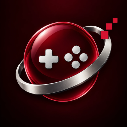

Relic Play
Play the PC games you own on your iPhone and iPad. Bring a game folder from your computer, pick a controller layout, and play.
What it does
Relic Play runs Windows games and programs that you already own, on your iPhone or iPad. Copy a game's folder from your computer with the Files app, add it to your Library, and press Play. No games are included: you bring your own. A small sample program is built in, so you can try it right away.
Play your way
- Game controllers, including Xbox-style and PlayStation-style layouts, with rumble.
- An on-screen controller with a layout you can edit, plus a touch keyboard and mouse for PC-style games.
- Settings for each game: screen size, performance overlay and launch options.
Relic Play Plus
Relic Play is free with ads, which appear only outside games. Relic Play Plus removes them. See Support for help and answers.